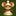
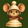
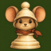

Original above, simplified below. Sizes are CSS pixels; use 100% browser zoom. The original large artwork is unchanged.
| 16px | 24px | 32px | 48px | 64px | |
|---|---|---|---|---|---|
| Original |  |  |  | ||
| Simplified |
| 16px | 24px | 32px | 48px | 64px | |
|---|---|---|---|---|---|
| Original | |||||
| Simplified |
Rounded corners here are an illustrative preview. Saved images remain square. Original size previews